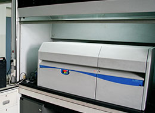
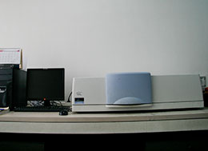
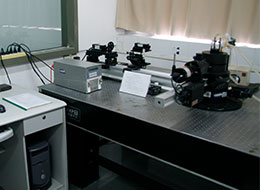
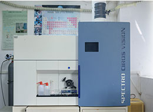

高分凝胶渗透色谱仪
凝胶渗透色谱(Gel Permeation Chromatography、GPC)是1964年，由J.C.Moore首先研究成功。不仅可用于小分子物质的分离和鉴定，而且可以用来分析化学性质相同分子体积……

紫外、可见光、近红外分光光度计
紫外分光光度计，就是根据物质的吸收光谱研究物质的成分、结构和物质间相互作用的有效手段。紫外分光光度计可以在紫外可见光区任意选择不同波长的光。物质的吸收光谱就是物质……

动静态激光光散射仪
动态光散射外文名叫Dynamic Light Scattering(DLS)，也称光子相关光谱Photon Correlation Spectroscopy (PCS) ，准弹性光散射quasi-elastic scattering，是一种测……

电感耦合等离子体发射光谱仪
测定超痕量元素和同位素比值的仪器。由等离子体发生器，雾化室，炬管，四极质谱仪和一个快速通道电子倍增管（称为离子探测器或收集器）组成。其工作原理是：雾化器将溶液样品……